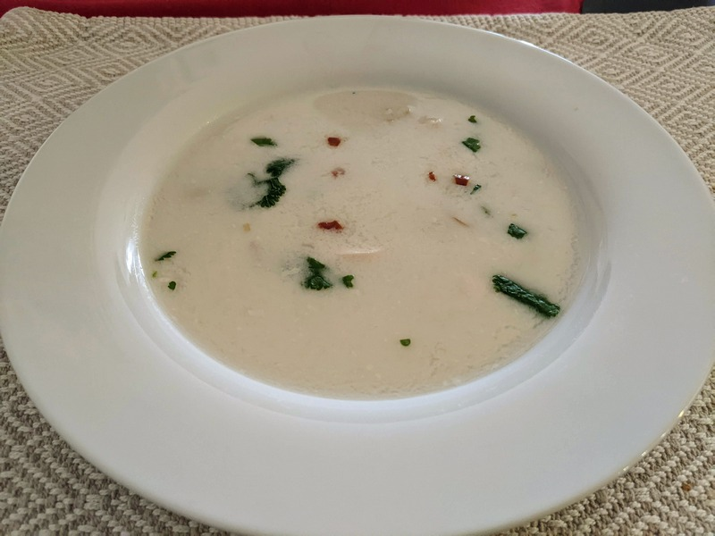

U asijské kuchyně ještě chvíli zůstaneme a já si sem odložím tento recept z OnaDnes na lehce pikantní, ale naprosto božskou polévku, kterou jsme si s Péťou doma okamžitě zamilovali. Ideální do tohoto chladného počasí, při nachlazení nebo kdykoliv, kdy potřebujete pořádně prohřát :-)
- 500g kuřecích prsou
- 3 lžíce rybí omáčky nam pla
- 1 a 1/2 lžíce limetkové šťávy
- 1l kuřecího vývaru
- 3 stonky citronové trávy
- 2cm čerstvého zázvoru
- 2 čerstvé chilli papričky
- 3 lžíce koriandru
- 1/2 hrnku rýže
- 400g plechovka kokosového mléka
Kuřecí maso nakrájíme na proužky a vložíme do skleněné misky a necháme marinovat v rybí omáčce promíchané s limetkovou šťávou. Mezitím si očistíme citronovou trávu a nakrájíme na kousky. Zázvor pokrájíme na plátky, chilli papričku zbavíme stopky, podélně ji rozřízneme, vyškrábneme semínka a pokrájíme na tenké proužky. Koriandr najemno nasekáme. Kuřecí vývar, do kterého vložíme citronovou trávu a zázvor, přivedeme k varu, vsypeme propláchnutou rýži a povaříme asi 15 minut. Pak přilijeme kokosové mléko, přidáme kuře s marinádou a povaříme asi 6-8 minut. Ke konci varu přidáme do polévky chilli (já dávám až do hotové polévky na talíři, aby s námi mohl polévku i Oli) a koriandr a můžeme servírovat.
